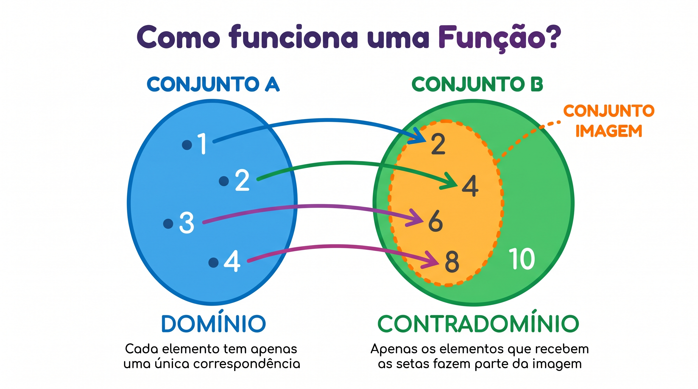
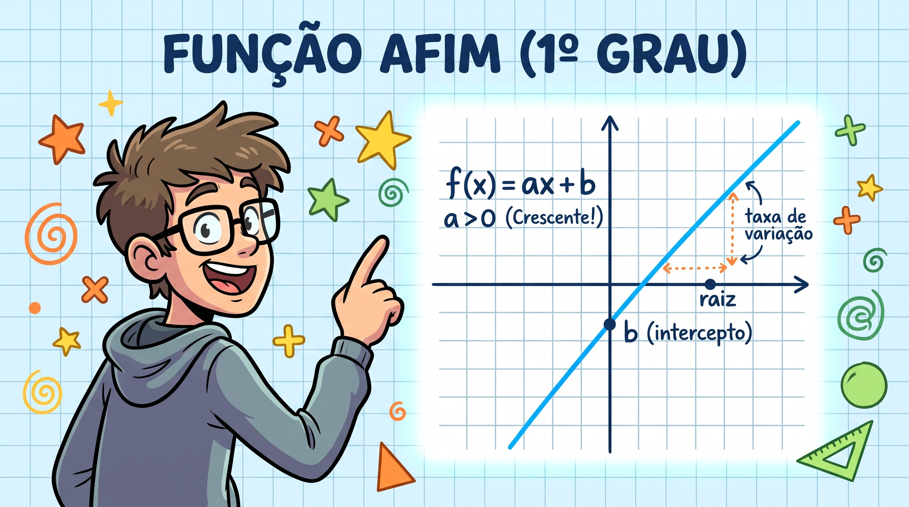
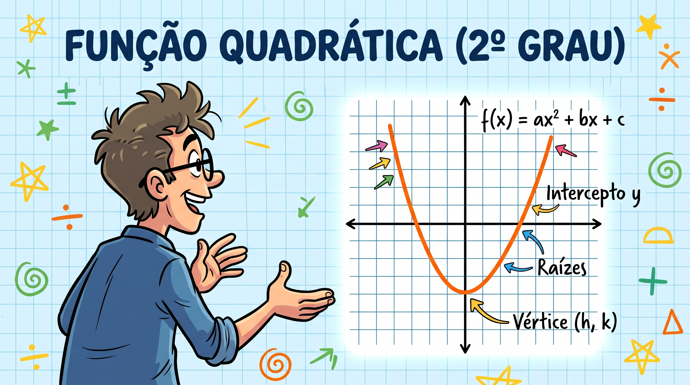

O que são Funções Matemáticas?
Na matemática, uma Função é uma regra que relaciona cada elemento de um conjunto (chamado de Domínio) a um único elemento de outro conjunto (chamado de Contradomínio). Elas estão presentes no nosso cotidiano, desde o cálculo do valor de uma corrida de aplicativo até a trajetória de uma bola chutada para o gol.
Para que uma relação entre conjuntos seja considerada uma função, ela precisa obedecer rigorosamente a duas regras:
- Todos participam: Todo elemento do conjunto de partida (Domínio) deve estar ligado a algum elemento do conjunto de chegada (Contradomínio). Não pode sobrar ninguém sem flecha no Domínio.
- Unicidade: Cada elemento do Domínio pode se ligar a apenas um elemento do Contradomínio. Dois elementos diferentes do Domínio podem até apontar para o mesmo valor no Contradomínio, mas o contrário NÃO PODE acontecer (um único elemento do Domínio nunca pode ter duas setas saindo dele).
Domínio, Contradomínio e Conjunto Imagem
Além dos conjuntos de partida e chegada, existe um terceiro conceito essencial: a Imagem da Função (Im). Enquanto o Contradomínio reúne todos os valores possíveis de chegada no conjunto B, o Conjunto Imagem é formado exclusivamente pelos elementos de B que efetivamente receberam alguma flecha (ou seja, os resultados reais calculados pela função).
Neste portal educativo, dividimos o estudo em dois grandes pilares para facilitar o seu aprendizado

Escolha um tópico para estudar
1. Função Afim (1° Grau)
Entenda a equação da reta f(x) = ax + b, taxa de variação, raiz da Função e gráficos crescentes ou decrescentes.

Estudar Função Afim2. Função Quadrática
Explore a parábola f(x) = ax² + bx + c, concavidade, fórmula de Bhaskara e o cálculo do vértice.

EStudar Função QuadráticaMateriais Externos Recomendados
Quer apronfundar ainda mais ou testar gráficos interativos? Confira estes portais gratuitos:
- GeoGebra Calculadora Gráfica – Desenhe gráficos de funções em tempo real.
- Khan Academy (Álgebra e Funções) – Videoaulas e exercícios interativos.
- Brasil Escola – Funções – Resumos teóricos e exemplos resolvidos.